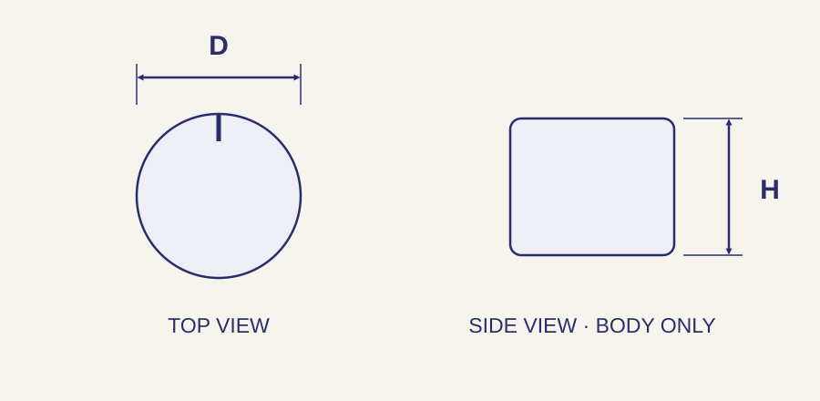

// ELECTRONIC HARDWARE
Control and clamping knobs for electronic equipment.
Match the knob to the shaft, mounting interface and operating task. Webson supplies and sources knobs for instruments, control panels and equipment assemblies by manufacturer part number or drawing, including specified attachment and finish requirements.
Request a knob quote →Part number, drawing or bill of material welcome.
Availability and lead time confirmed with quotation.
Knobs and attachment styles
Scroll sideways on smaller screens to view every column.
| Style | Typical function | Details to identify |
|---|---|---|
| Control knobs | Rotary adjustment on a compatible control shaft. | Shaft profile and size, attachment method, bore depth and indicator position. |
| Set-screw knobs | A screw secures the knob to its specified shaft. | Bore fit, set-screw details, shaft engagement and tool access. |
| Push-on and friction-fit knobs | Retention uses the specified shaft and mating bore or spring feature. | Exact shaft geometry, fit and compatible manufacturer configuration. |
| Clamping knobs | Hand-operated tightening with a female threaded insert or projecting threaded stud. | Thread callout, usable depth or stud length, body clearance and application requirements. |
Dimensions to include with your inquiry

The illustration shows a generic knob envelope, not a specific shaft fit. A control knob’s bore and a clamping knob’s threaded interface are different callouts. Follow the part drawing for bore profile, depth, threads and installed clearance.
Scroll sideways on smaller screens to view every column.
| Feature | What to specify | Fit and installation check |
|---|---|---|
| Outside diameter D | Maximum knob body or skirt diameter, including any protruding features. | Check adjacent controls, labels and hand clearance. |
| Body height H | Height of the knob body under the drawing’s stated convention. | Keep body height separate from stud projection or installed panel clearance. |
| Shaft interface | Bore size, profile and tolerance; usable engagement depth. | Round, flat-sided and other shaft profiles must match the specified retention system. |
| Threaded attachment | Thread size and pitch, required class, stud projection or usable insert depth. | A nominal thread alone does not define the complete clamping configuration. |
| Indicator and seating | Pointer or index position, skirt dimensions and clearance from the panel. | Check alignment to the control’s reference position and avoid interference. |
Material, finish and operating requirements
Specify the required molded material or metal, color, finish and grip texture. Where relevant, include the exact temperature, cleaning, flammability or electrical requirements. These properties must be supported by the specified part and material; they cannot be inferred from appearance.
Include the applicable specifications and any required test or compliance documentation with the inquiry. Webson reviews sourcing options for the individual component and order.
Equipment and electronic assembly applications
Control knobs support operator adjustment of instruments and electronic equipment. Clamping knobs provide hand-operated fastening where the assembly calls for it. Review access, repeated adjustment, seating clearance and the manufacturer’s operating or tightening limits for the individual product.
Combine related hardware in one bill of material. Repeat production requirements can be reviewed for custom kitting or vendor-managed inventory.
Questions before ordering
Will any knob with the same bore fit my shaft?
Not necessarily. Match shaft profile, bore tolerance, engagement depth and retention method as well as nominal size. Check the exact knob and shaft drawings.
Are a control knob and a clamping knob interchangeable?
They serve different attachment and operating functions. A control knob couples to a control shaft; a clamping knob uses a specified fastening interface. Choose the configuration required by the assembly.
What should I specify for a pointer or index line?
Identify the indicator style and its required orientation relative to the shaft profile or mounting feature. Include a drawing if the orientation is critical to control alignment.
Can Webson review a replacement or custom knob?
Yes. Send the existing manufacturer part number or a current drawing with the interface, dimensions, material, finish and quantity. Identify whether an alternative may be proposed for approval.
Request a knob quote
Send the manufacturer and full part number, or a drawing with the shaft interface or thread callout, body dimensions, usable depth or stud projection, attachment method and indicator requirements. Include quantity, material, color or finish, documentation and requested delivery date.
Request a knob quote →Quality and documentation
Webson is an AS9120B and ISO 9001:2015 certified distributor. Identify certificates, traceability and source restrictions with your inquiry so requirements can be reviewed for the order. View certification and quality scope.
Serving customers since 1986 · Deer Park, New York · Standard and drawing-specific sourcing